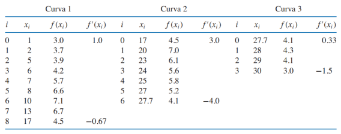
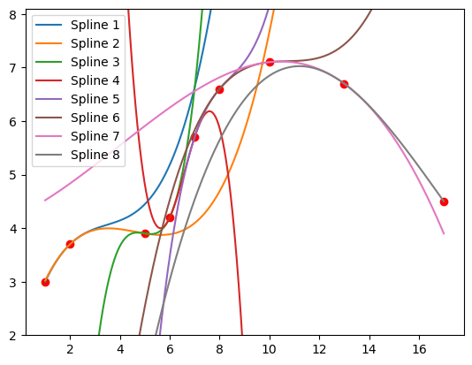
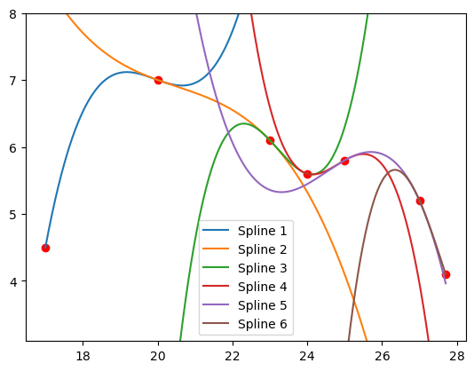
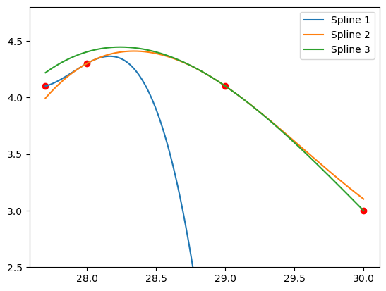

import sympy as sym
from IPython.display import display
def cubic_spline(xs: list[float], ys: list[float]) -> list[sym.Symbol]:
points = sorted(zip(xs, ys), key=lambda x: x[0]) #ordenar puntos por x
xs = [x for x, _ in points]
ys = [y for _, y in points]
n = len(points) - 1 #Número de splines
h = [xs[i + 1] - xs[i] for i in range(n)] #distancias entre xs contiguas
alpha = [0] * (n + 1)
for i in range(1, n):
alpha[i] = 3 / h[i]*(ys[i+1] - ys[i])-3 / h[i-1]*(ys[i] - ys[i-1])
l = [1]
u = [0]
z = [0]
for i in range(1, n):
l.append(2 * (xs[i + 1] - xs[i - 1]) - h[i - 1] * u[i - 1])
u.append(h[i] / l[i])
z.append((alpha[i] - h[i - 1] * z[i - 1]) / l[i])
l.append(1)
z.append(0)
c = [0] * (n + 1)
b = [0] * n
d = [0] * n
a = [0] * n
x = sym.Symbol("x")
splines = []
for j in range(n - 1, -1, -1):
c[j] = z[j] - u[j] * c[j + 1]
b[j] = (ys[j + 1] - ys[j]) / h[j] - h[j] * (c[j + 1] + 2 * c[j]) / 3
d[j] = (c[j + 1] - c[j]) / (3 * h[j])
a[j] = ys[j]
S = a[j] + b[j]*(x - xs[j]) + c[j]*(x - xs[j])**2 + d[j]*(x - xs[j])**3
splines.append(S)
splines.reverse()
return splines
points = sorted(zip(xs, ys), key=lambda x: x[0]) #ordenar puntos por x
xs = [x for x, _ in points]
ys = [y for _, y in points]
n = len(points) - 1 #Número de splines
h = [xs[i + 1] - xs[i] for i in range(n)] #distancias entre xs contiguas
alpha = [0] * (n + 1)
for i in range(1, n):
alpha[i] = 3 / h[i]*(ys[i+1]-ys[i])-3 / h[i-1]*(ys[i]-ys[i-1])
l = [1]
u = [0]
z = [0]
for i in range(1, n):
l += [2 * (xs[i + 1] - xs[i - 1]) - h[i - 1] * u[i - 1]]
u += [h[i] / l[i]]
z += [(alpha[i] - h[i - 1] * z[i - 1]) / l[i]]
l.append(1)
z.append(0)
c = [0] * (n + 1)
x = sym.Symbol("x")
splines = []
for j in range(n - 1, -1, -1):
c[j] = z[j] - u[j] * c[j + 1]
b = (ys[j + 1] - ys[j]) / h[j] - h[j] * (c[j + 1] + 2 * c[j]) / 3
d = (c[j + 1] - c[j]) / (3 * h[j])
a = ys[j]
print(j, a, b, c[j], d)
S = a + b*(x - xs[j]) + c[j]*(x - xs[j])**2 + d*(x - xs[j])**3
splines.append(S)
splines.reverse()
return splines
Leandro Bravo GR1CC
CONJUNTO DE EJERCICIOS
Frontera natural
Frontera condicionada
import sympy as sym
def cubic_spline_clamped(xs: list[float], ys: list[float],
d0: float, dn: float)->list[sym.Symbol]:
points = sorted(zip(xs, ys), key=lambda x: x[0]) #ordenar puntos por x
xs = [x for x, _ in points]
ys = [y for _, y in points]
n = len(points) - 1 #Número de splines
h = [xs[i + 1] - xs[i] for i in range(n)] #distancias entre xs contiguas
alpha = [0] * (n + 1)
alpha[0] = 3 / h[0] * (ys[1] - ys[0]) - 3 * d0
alpha[-1] = 3 * dn - 3 / h[n - 1] * (ys[n] - ys[n - 1])
for i in range(1, n):
alpha[i] = 3 / h[i]*(ys[i+1]-ys[i])-3 / h[i-1]*(ys[i]-ys[i-1])
l = [2 * h[0]]
u = [0.5]
z = [alpha[0] / l[0]]
for i in range(1, n):
l.append(2 * (xs[i + 1] - xs[i - 1]) - h[i - 1] * u[i - 1])
u.append(h[i] / l[i])
z.append((alpha[i] - h[i - 1] * z[i - 1]) / l[i])
l.append(h[n - 1] * (2 - u[n - 1]))
z.append((alpha[n] - h[n - 1] * z[n - 1]) / l[n])
c = [0] * (n + 1)
b = [0] * n
d = [0] * n
a = [0] * n
x = sym.Symbol("x")
splines = []
for j in range(n - 1, -1, -1):
c[j] = z[j] - u[j] * c[j + 1]
b[j] = (ys[j + 1] - ys[j]) / h[j] - h[j]*(c[j + 1] + 2 *c[j]) / 3
d[j] = (c[j + 1] - c[j]) / (3*h[j])
a[j] = ys[j]
S = a[j] + b[j]*(x-xs[j]) + c[j]*(x - xs[j])**2 + d[j]*(x - xs[j])**3
splines.append(S)
splines.reverse()
return splines- Dados los puntos \((0,1)\), \((1,5)\), \((2,3)\), determine el spline cúbico.
xs = [0, 1, 2]
ys = [1, 5, 3]
splines = cubic_spline(xs=xs, ys=ys)
_ = [display(s) for s in splines]
print("______")
_ = [display(s.expand()) for s in splines]\(\displaystyle - 1.5 x^{3} + 5.5 x + 1\)
\(\displaystyle 1.0 x + 1.5 \left(x - 1\right)^{3} - 4.5 \left(x - 1\right)^{2} + 4.0\)
______\(\displaystyle - 1.5 x^{3} + 5.5 x + 1\)
\(\displaystyle 1.5 x^{3} - 9.0 x^{2} + 14.5 x - 2.0\)
- Dados los puntos \((-1,1)\), \((1,3)\), determine el spline cúbico sabiendo que \(f'(x_0) = 1\), \(f'(x_n) = 2\).
xs = [-1, 1]
ys = [1, 3]
d0 = 1
dn = 2
splines = cubic_spline_clamped(xs=xs, ys=ys, d0=d0, dn=dn)
_ = [display(s) for s in splines]
print("______")
_ = [display(s.expand()) for s in splines]\(\displaystyle 1.0 x + 2.0\)
______\(\displaystyle 1.0 x + 2.0\)
- Usando la función anterior, encuentre el spline cúbico para: \(xs = [1, 2, 3]\), \(ys = [2, 3, 5]\).
xs = [1, 2, 3]
ys = [2, 3, 5]
splines = cubic_spline(xs=xs, ys=ys)
_ = [display(s) for s in splines]
print("______")
_ = [display(s.expand()) for s in splines]\(\displaystyle 0.75 x + 0.25 \left(x - 1\right)^{3} + 1.25\)
\(\displaystyle 1.5 x - 0.25 \left(x - 2\right)^{3} + 0.75 \left(x - 2\right)^{2}\)
______\(\displaystyle 0.25 x^{3} - 0.75 x^{2} + 1.5 x + 1.0\)
\(\displaystyle - 0.25 x^{3} + 2.25 x^{2} - 4.5 x + 5.0\)
- Usando la función anterior, encuentre el spline cúbico para: \(xs = [0, 1, 2, 3]\), \(ys = [-1 ,1, 5, 2]\).
xs = [0, 1, 2, 3]
ys = [-1 ,1, 5, 2]
splines = cubic_spline(xs=xs, ys=ys)
_ = [display(s) for s in splines]
print("______")
_ = [display(s.expand()) for s in splines]\(\displaystyle 1.0 x^{3} + 1.0 x - 1\)
\(\displaystyle 4.0 x - 3.0 \left(x - 1\right)^{3} + 3.0 \left(x - 1\right)^{2} - 3.0\)
\(\displaystyle 1.0 x + 2.0 \left(x - 2\right)^{3} - 6.0 \left(x - 2\right)^{2} + 3.0\)
______\(\displaystyle 1.0 x^{3} + 1.0 x - 1\)
\(\displaystyle - 3.0 x^{3} + 12.0 x^{2} - 11.0 x + 3.0\)
\(\displaystyle 2.0 x^{3} - 18.0 x^{2} + 49.0 x - 37.0\)
- Use la función cubic_spline_clamped, provista en el enlace de Github, para graficar los datos de la siguiente tabla.

# Curva 1
import matplotlib.pyplot as plt
import numpy as np
import sympy as sym
# Definir los puntos a interpolar y las derivadas en el primer y último punto
xs = [1, 2, 5, 6, 7, 8, 10, 13, 17]
ys = [3, 3.7, 3.9, 4.2, 5.7, 6.6, 7.1, 6.7, 4.5]
d0 = 1
dn = -0.67
# Definir x como una variable simbólica
x = sym.Symbol('x')
# Llamar a la función cubic_spline_clamped
splines = cubic_spline_clamped(xs, ys, d0, dn)
# Crear una gráfica para cada spline
x_vals = np.linspace(min(xs), max(xs), 1000)
for i, spline in enumerate(splines):
y_vals = [spline.subs(x, val) for val in x_vals]
plt.plot(x_vals, y_vals, label=f'Spline {i+1}')
# Mostrar la gráfica
plt.scatter(xs, ys, color='red')
plt.ylim(min(ys)-1, max(ys)+1)
plt.legend()
plt.show()
# Curva 2
import matplotlib.pyplot as plt
import numpy as np
import sympy as sym
# Definir los puntos a interpolar y las derivadas en el primer y último punto
xs = [17, 20, 23, 24, 25, 27, 27.7]
ys = [4.5, 7, 6.1, 5.6, 5.8, 5.2, 4.1]
d0 = 3
dn = -4
# Definir x como una variable simbólica
x = sym.Symbol('x')
# Llamar a la función cubic_spline_clamped
splines = cubic_spline_clamped(xs, ys, d0, dn)
# Crear una gráfica para cada spline
x_vals = np.linspace(min(xs), max(xs), 1000)
for i, spline in enumerate(splines):
y_vals = [spline.subs(x, val) for val in x_vals]
plt.plot(x_vals, y_vals, label=f'Spline {i+1}')
# Mostrar la gráfica
plt.scatter(xs, ys, color='red')
plt.ylim(min(ys)-1, max(ys)+1)
plt.legend()
plt.show()
# Curva 3
import matplotlib.pyplot as plt
import numpy as np
import sympy as sym
# Definir los puntos a interpolar y las derivadas en el primer y último punto
xs = [27.7, 28, 29, 30]
ys = [4.1, 4.3, 4.1, 3]
d0 = 0.33
dn = -1.5
# Definir x como una variable simbólica
x = sym.Symbol('x')
# Llamar a la función cubic_spline_clamped
splines = cubic_spline_clamped(xs, ys, d0, dn)
# Crear una gráfica para cada spline
x_vals = np.linspace(min(xs), max(xs), 1000)
for i, spline in enumerate(splines):
y_vals = [spline.subs(x, val) for val in x_vals]
plt.plot(x_vals, y_vals, label=f'Spline {i+1}')
# Mostrar la gráfica
plt.scatter(xs, ys, color='red')
plt.ylim(min(ys)-0.5, max(ys)+0.5)
plt.legend()
plt.show()